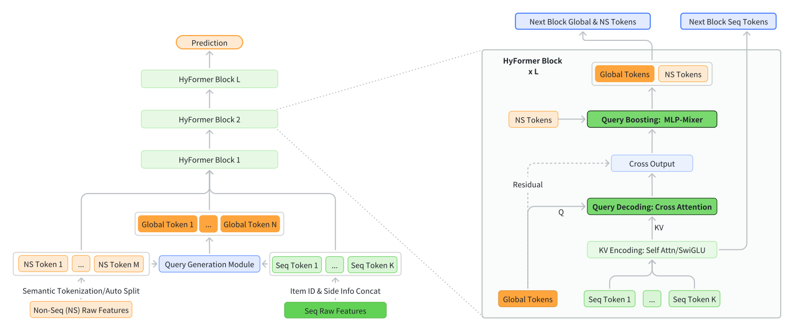
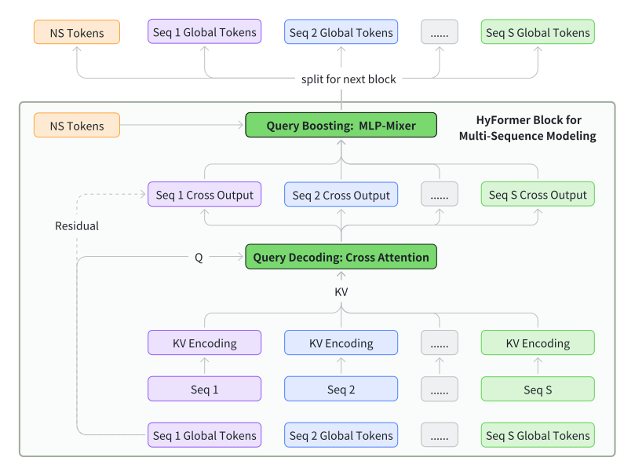
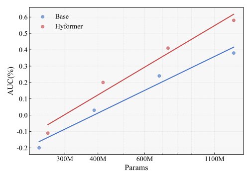
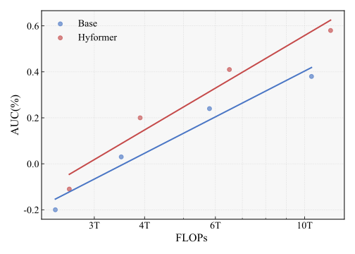

HyFormer：重新审视序列建模与特征交互在CTR预测中的作用
摘要
工业大规模推荐模型（LRM）面临着在严格效率约束下联合建模长程用户行为序列与异构非序列特征的挑战。然而，现有大多数架构采用解耦式流水线：首先使用基于查询词元的序列压缩器（如LONGER）对长序列进行压缩，然后通过词元混合模块（如RankMixer）与稠密特征融合，从而限制了表示容量与交互灵活性。本文提出HyFormer，一种统一的混合Transformer架构，将长序列建模与特征交互紧密集成到单一主干中。从序列建模的视角出发，我们重新审视并重新设计了LRM中的查询词元，并将LRM建模任务构建为一个交替优化过程，该过程集成了两个核心组件：查询解码，其将非序列特征扩展为全局词元，并在长行为序列的逐层键值表示上进行长序列解码；以及查询增强，其通过高效的词元混合增强跨查询与跨序列的异构交互。这两种互补机制被迭代执行，以在多层间精炼语义表示。在十亿级工业数据集上的大量实验表明，在可比的参数与FLOPs预算下，HyFormer持续优于强大的LONGER与RankMixer基线，同时在参数与FLOPs增加时展现出更优的缩放行为。在高流量生产系统中的大规模在线A/B测试进一步验证了其有效性，相较于已部署的最先进模型取得了显著增益。这些结果凸显了HyFormer作为工业LRM统一建模框架的实用性与可扩展性。
1. 引言
现代工业大规模推荐模型（LRM）运行在日益复杂的环境中，其中准确的预测依赖于对长程用户行为历史与丰富异构特征（包括用户画像、上下文信号和交叉特征）的联合建模。随着用户参与度在更长的时间跨度上不断增长以及特征空间持续扩展，如何有效地将长序列信号与高维非序列信息相整合，已成为大规模推荐与搜索系统的核心挑战。 为应对这一挑战，近期工业架构在很大程度上收敛于一种分离式扩展范式，即将长序列建模(Xu et al., 2025a; Zivic et al., 2024; Borisyuk et al., 2024)与特征交互相结合(Gui et al., 2023; Yu et al., 2025; Xu et al., 2025b; Khrylchenko et al., 2025)。在该范式中，长用户行为序列由专用序列Transformer编码以捕获时间依赖与用户兴趣，压缩后的序列词元通过词元混合或交互模块与其他异构特征混合，以实现跨特征推理。这种“先长序列建模，再异构特征交互”的流水线已被证明有效，并已成为扩展现代工业LRM的主导设计选择。尽管具有强大的经验性能，这一主流范式从根本上强制了一种压缩式、晚期融合且单向的交互模式。随着序列长度与模型容量持续增长，这种两阶段设计暴露出根本性局限，制约了建模表达能力与可扩展性。
- •
-
•
序列压缩词元与异构非序列词元之间的交互通常仅发生在模型的后期阶段。在当前范式下，跨特征推理被推迟到序列压缩之后，导致不同词元类型之间的交互浅层且隐式。这种延迟融合限制了模型捕获跨多个行为序列与异构特征组的细粒度依赖的能力，并阻碍了早期层表示从跨域上下文信息中获益。
-
•
由于交互模块仅作用于压缩后的序列表示，增加模型容量或序列长度主要改善的是孤立组件，而非增强联合表示。因此，扩展深度或参数会导致较低的缩放效率，即性能提升相对于额外计算预算的增长速率较慢，因为计算未能有效地转化为更丰富的联合表示。
这些局限促使我们从根本上重新思考长程序列建模与异构特征交互应如何整合。与其将序列编码与词元混合视为两个松散耦合的阶段，不如需要一个统一建模框架，以实现序列信号与非序列信号之间更深层、更早期且双向的交互。
在本文中，我们提出HyFormer，一种混合Transformer架构，将序列建模与特征交互统一到单一主干中。HyFormer引入一组全局词元，作为长行为序列与异构特征之间的共享语义接口。通过堆叠设计，HyFormer在两种轻量而富有表现力的机制之间交替。查询解码模块使用全局查询词元对长行为序列的逐层键值表示进行注意力计算，使全局上下文能够直接塑造序列表示。查询增强模块通过高效的词元混合进一步增强跨查询与跨序列交互，在多层间逐步丰富语义表示。该设计实现了序列建模与特征交互组件之间的双向信息流动，克服了传统解耦流水线的局限。在十亿级工业数据集上的大量实验表明，在可比的参数与FLOPs预算下，HyFormer持续优于强大的基于序列的基线与词元混合基线。此外，HyFormer在模型FLOPs与参数方面展现出更优的缩放行为，并在部署于高流量生产系统中的大规模在线A/B测试中取得了显著增益。
综上所述，本文做出以下贡献：
-
•
我们识别出大规模工业推荐系统中主流解耦式序列建模与特征交互范式的根本性局限，并分析了其单向与晚期融合设计如何制约建模能力与可扩展性。
-
•
我们提出HyFormer，一种统一的混合Transformer架构，通过查询解码与查询增强实现长程行为序列与异构特征之间的双向、逐层交互，在真实工业场景中取得了最先进的性能与可扩展性。
-
•
我们在十亿级工业数据集上实证验证了所提模型的有效性及其优越的缩放性能。目前，HyFormer已在字节跳动全面部署，每天为数十亿用户提供服务。
2. 相关工作
2.1. 传统推荐范式
现代工业LRM通常建立在两大组件之上：行为序列建模与特征交互网络。在该范式中，用户行为历史首先由专用序列模型编码，其输出随后与异构非序列特征一起被下游交互模块消费。近期工业系统沿此方向大幅推进了序列建模的可扩展性。SIM(Qi et al., 2020)、ETA(Chen et al., 2022)、TWIN(Chang et al., 2023; Si et al., 2024)、TransAct(Xia et al., 2023)和LONGER(Chai et al., 2025)等方法通过高效注意力机制、层次化聚合、KV缓存和面向服务的设计，将序列编码器扩展到数百或数千个事件。这些工作在建模大规模流量下的长程用户行为方面展示了清晰的幂律缩放趋势，同时在很大程度上保留了解耦序列编码与特征交互的两阶段架构。
2.2. 统一推荐架构
为减少序列建模与特征交互之间的割裂，近期研究探索了在单一主干内处理异构信号的统一架构。HSTU(Zhai et al., 2024a)等层次化生成架构通过以上下文与候选信号为条件执行序列转导，代表了一种统一推荐范式。InterFormer(Zeng et al., 2025)通过引入可学习交互词元实现双向信号交换，弥合了序列编码器与交互网络之间的差距。MTGR(Han et al., 2025)进一步推进统一化，将用户、行为、实时和候选特征重新组织为异构词元，并用共享的Transformer式主干进行编码，使序列信息与交叉特征得以连贯建模。继MTGR之后，OneTrans(Zhang et al., 2025)沿相似方向，使用单一Transformer联合捕获序列依赖与高阶特征交互，同时以金字塔压缩风格简化Transformer结构。该工作可视为相较于MTGR的简化版本。
由于MTGR(Han et al., 2025)和OneTrans(Zhang et al., 2025)简单地将查询词元数量增加为所有非序列词元的数量，在实践中很容易观察到服务效率的显著下降（见第4节）。此外，用于建模特征交互的统一Transformer结构在工业级LRM中通常不够充分(Zhu et al., 2025)。总体而言，统一架构代表着朝着消解序列模型与特征交互栈之间长期分离迈出的一步，但在最小架构开销下实现完全统一仍是一个开放挑战。

3. 方法
3.1. 问题陈述
令与分别表示用户空间与物品空间。对于用户，将其原始行为历史记为，其中每个，并令表示伴随的非序列描述符，如画像属性、上下文信号和交叉特征。给定候选物品，目标是估计用户与物品发生互动的概率：
| (1) |
其中表示交互是否发生。
模型参数从历史数据中通过最小化标准二元交叉熵目标来学习：
| (2) |
其中表示LRM产生的预测互动概率。
3.2. 整体框架
传统LRM架构通常采用流水线式设计，先执行类似LONGER (Chai et al., 2025)的序列建模，再将包含压缩序列信息的查询词元用于后续类似RankMixer(Zhu et al., 2025)的子序列特征交互。如前所述，这种分离式流水线通常导致序列建模和异构特征交互两方面的建模都不充分。为克服这一局限，本工作提出了一种统一的混合框架，通过堆叠HyFormer层对非序列（NS）词元与长行为序列进行联合建模。
HyFormer的整体架构如图1所示。如图所示，每个HyFormer层集成了两种互补机制： (1) 查询解码，该机制通过基于MLP的查询生成将非序列特征和序列特征扩展为多个语义全局词元（即序列查询），并在长序列K/V对上执行交叉注意力，使全局信息能够直接塑造序列词元的表示；以及 (2) 查询增强，该机制应用MLP-Mixer风格的词元混合来加强解码查询与非序列词元之间的交互。
通过将全局异构特征混合与高效长序列建模紧密结合，所提框架实现了更丰富的异构交互、对序列结构更深层的利用，并且与现有分离式流水线架构相比，在性能和计算成本方面都更具优势。
3.3. 查询生成
3.3.1. 输入词元化
遵循RankMixer(Zhu et al., 2025)中的词元化策略，输入词元既可以按语义分组组织，也可以按自动切分组织。 语义分组根据词元的内在含义（例如用户、上下文或行为语义）对其进行划分，而自动切分则将所有特征展平为单个嵌入并施加均匀切分，不进行显式的语义区分。在实践中，鉴于本设置中输入特征具有清晰的语义角色，HyFormer采用语义分组以保留结构化的归纳偏置并提升可解释性。
3.3.2. 查询生成
查询生成模块将异构非序列特征转换为用于解码长行为序列的语义查询词元。所有非序列特征向量被拼接后通过一个轻量级前馈网络进行映射。此外，通过对行为序列表示进行池化获得一个全局序列级摘要，并将其视为类似于非序列特征的额外共享输入。
查询通过轻量级投影将非序列特征与池化后的序列摘要相结合来生成：
| (3) |
其中
| (4) |
为保持服务效率，该模块支持特征选择和可选的查询压缩，在保持生成的查询数量稳定的同时，为下游解码保留足够的表示能力。
在更深的HyFormer层中，查询不再通过MLP重新生成。相反，每一层复用上一层的查询，有效地将更深的交叉注意力输出作为更新后的查询，以逐步更丰富的语义对长序列进行询问。
3.4. 查询解码
查询解码模块负责将非序列特征转换为语义查询，并通过交叉注意力从长行为序列中提取目标感知信息。借助序列表示编码模块产生的长序列逐层键值表示，查询解码模块通过多查询交叉注意力机制，用来自查询生成模块的多个查询词元对K/V表示进行解码。
3.4.1. 序列表示编码
HyFormer支持多种具有不同容量-效率权衡的序列编码策略。给定行为序列，每种策略都会产生用于后续解码的逐层键值表示。
(i) 完整Transformer编码(Vaswani et al., 2017)。 在最高建模容量下，采用标准Transformer编码器：
| (5) |
该编码器通过完整自注意力捕获细粒度交互和长程依赖关系。
(ii) LONGER (Chai et al., 2025)风格的高效编码。 为提升长序列的效率，完整自注意力被替换为紧凑短序列与完整历史之间的交叉注意力：
| (6) |
其中是长度为的紧凑短序列。 此处用作查询，而同时用作键和值。该形式替换了完整自注意力，并将计算复杂度从降低到。
(iii) 解码器风格的轻量级编码。 对于延迟敏感的场景，序列表示通过无注意力的前馈操作进行变换：
| (7) |
以牺牲上下文建模能力换取最低的计算成本。
在所有变体中，所得表示均经过线性投影以获得各层特定的键值状态：
| (8) |
键值状态在每一层重新计算，使序列特征能够随解码器深度共同演化，同时支持灵活的部署配置。
3.4.2. 通过交叉注意力进行查询解码
给定序列特定的查询词元及相应的逐层键值表示，HyFormer通过交叉注意力执行查询解码。对于每条行为序列，在第层，解码后的查询表示按如下方式获得：
| (9) |
其中表示标准多头交叉注意力操作，表示第层使用的查询词元。
该解码步骤使全局的非序列特征能够直接关注长行为序列，从而将上下文信号注入序列感知的查询表示中。解码后的查询随后用作后续交互和增强模块的语义接口。
3.5. 查询增强
查询增强模块在查询表示被送入后续交叉注意力层之前对其进行增强。解码步骤之后，查询已经编码了序列感知信息，但其与静态非序列异构特征之间的交互仍未得到充分探索。查询增强通过显式地在查询词元之间混合信息并注入额外的非序列特征信号来解决这一局限。
利用解码输出，统一查询表示定义为
| (10) |
其中，表示在第层获得的解码查询词元集合，其余个词元对应于非序列特征嵌入。
具体而言，增强模块应用MLP-Mixer风格(Tolstikhin et al., 2021)的轻量级词元混合操作，该操作受RankMixer (Zhu et al., 2025)启发，用于丰富解码后的查询。每个查询词元首先被划分为个通道子空间：
| (11) |
对于每个子空间索引，MLP-Mixer通过拼接相应的子空间来聚合所有词元位置的信息：
| (12) |
收集所有混合词元可得到词元混合后的表示
| (13) |
混合后的查询进一步由轻量级逐词元前馈模块进行精炼：
| (14) |
其中对每个查询词元应用独立的前馈变换，实现子空间特定的精炼，同时保持线性计算复杂度。
最后，应用残差连接以稳定优化并保留原始解码语义：
| (15) |
增强后的查询随后被传递到下一个HyFormer层，使更深的层能够以逐步更丰富、更具表现力的表示对长行为序列进行询问。
3.6. HyFormer模块
HyFormer模块通过堆叠多个层构建，每一层由一个查询解码块和一个查询增强块组成。在每一层，语义查询通过交叉注意力与长行为序列交互，所得的序列感知表示经进一步精炼后作为更深层的输入。
形式化地，在第层，查询解码块接收传入的全局查询，并在由长序列导出的逐层键值表示上执行交叉注意力：
| (16) |
解码后的查询随后与非序列词元拼接并传递到查询增强块，该块应用轻量级逐词元变换来丰富查询表示：
| (17) |
通过堆叠多个这样的层，HyFormer逐步精炼语义查询，使更深的层能够以逐步更具表现力的表示对长序列进行抽象。顶层HyFormer层的输出被送入下游MLP进行最终预测，从而在LRM中实现异构非序列特征与长行为序列的高效灵活集成。
3.7. 多序列建模

在工业推荐场景中，用户行为通常被组织为多个异构序列，例如视频观看序列和商品购买序列。由于实际的多序列通常具有不同的特征空间和语义表示，我们通过实验发现，MTGR(Han et al., 2025)或OneTrans(Zhang et al., 2025)所采用的简单序列合并会导致性能显著下降（见第4节）。因此，HyFormer不是将不同序列合并为单一统一流，而是在每个HyFormer块中独立处理每条行为序列，以兼顾效率与效果。如图2所示，对于每条序列，都会构建一组专用的查询词元，并用于在相应的序列表示上执行查询解码。该设计在解码过程中保留序列特定的语义，同时使跨序列交互能够在之后通过查询级词元混合来处理，而无需显式拼接序列。
3.8. 训练与部署优化
3.8.1. 面向长序列的GPU池化。
用户长序列特征可能非常庞大，从而带来显著的数据传输开销（例如主机到设备的内存拷贝）以及主机上的高内存压力。幸运的是，此类序列中真正唯一的特征ID数量是有限的（通常为总词元的25%）。我们利用这种稀疏性对特征进行去重，从而大幅降低传输成本和主机内存占用。具体而言，在图执行之前，特征被存储在一个压缩的嵌入表中。在执行期间，我们构建一个高性能前向算子，直接在GPU上重建原始序列特征。在反向传播中，配套的反向算子将来自序列特征的梯度聚合为嵌入表的梯度。这些梯度随后被向上传播以更新稀疏参数。
3.8.2. 异步AllReduce
为缓解同步梯度聚合带来的空闲时间，系统启用异步AllReduce，使第步的梯度同步与第步的前向和反向计算重叠。该设计有效消除了通信气泡并最大化了GPU利用率。然而，其代价是为稠密参数引入了一步陈旧性：由于稠密参数的梯度只有在异步归约完成后才可用，更新规则变为 这表明第步的稠密参数使用上一步的梯度。相比之下，稀疏参数在其局部梯度计算完成后即可立即更新，得到 从而实际上比稠密参数更新领先一步。尽管这种混合更新调度在稠密与稀疏参数状态之间引入了轻微的时间不一致性，但实证结果表明，这种陈旧性在实践中并不会降低收敛质量或模型性能。
4. 实验
| Sequence Modeling | Feature Interaction | AUC | AUC |
|
|
||||
| BaseArch: Traditional Two-Stage Models | |||||||||
| LONGER(Chai et al., 2025) | RankMixer(Tolstikhin et al., 2021; Zhu et al., 2025) | 0.6478 | – | 386 | 3.5 | ||||
| LONGER(Chai et al., 2025) | Full Transformer(Vaswani et al., 2017) | 0.6472 | -0.09% | 416 | 6.2 | ||||
| LONGER(Chai et al., 2025) | Wukong(Zhang et al., 2024) | 0.6465 | -0.20% | 385 | 5.2 | ||||
| Full Transformer(Vaswani et al., 2017) | RankMixer(Tolstikhin et al., 2021; Zhu et al., 2025) | 0.6481 | +0.05% | 388 | 6.6 | ||||
| Full Transformer(Vaswani et al., 2017) | Full Transformer(Vaswani et al., 2017) | 0.6474 | -0.06% | 418 | 9.3 | ||||
| Full Transformer(Vaswani et al., 2017) | Wukong(Zhang et al., 2024) | 0.6468 | -0.15% | 387 | 8.3 | ||||
| UniArch: Unified-Block Models | |||||||||
| MTGR/OneTrans (w/ LONGER)(Han et al., 2025; Zhang et al., 2025) | 0.6480 | +0.03% | 406 | 6.6 | |||||
| MTGR/OneTrans (w/ Full Transformer)(Han et al., 2025; Zhang et al., 2025) | 0.6483 | +0.08% | 450 | 21.9 | |||||
| HyFormer (Ours) | 0.6489 | +0.17% | 418 | 3.9 | |||||
4.1. 实验设置
4.1.1. 数据集
我们在字节跳动抖音搜索系统的点击率（CTR）预测任务上评估我们的模型，这是一个真实世界的大规模工业搜索推荐场景。该数据集源自跨越70个连续天的在线用户交互日志子集，包含3十亿个样本。每个样本包含用户特征、查询特征、文档特征、交叉特征以及若干序列特征。模型中使用的三个主要序列定义如下：
-
•
长期序列：用户的长期搜索与点击行为序列，其长度可按需定制，本研究采用的上界为3000。
-
•
搜索序列：经过 Query Search 模块过滤的用户 top-50 搜索行为项。
-
•
信息流序列：经过 Query Search 模块过滤的用户 top-50 信息流行为项。
4.1.2. 基线
我们将模型与若干强基线进行了比较，这些基线可分为两类架构范式：传统两阶段模型和统一架构模型。
传统两阶段模型遵循普遍的主流设计，即将序列建模与特征交互分离为两个顺序阶段。具体而言，序列表征首先由专门的序列建模模块生成，随后与其他特征的词元级表征进行交叉。对于长序列建模，我们使用了 LONGER(Chai et al., 2025) 或 Full Transformer(Vaswani et al., 2017) 架构。为捕捉词元化特征之间的交互，我们采用了若干专为特征交互设计的成熟架构，包括 RankMixer(Zhu et al., 2025)、Full Transformer(Vaswani et al., 2017) 和 Wukong(Zhang et al., 2024)。
相比之下，统一块模型采用联合建模方法，将序列特征和非序列特征都进行词元化，并在单个模型块中同时处理。这将序列建模与异构特征交互整合为一个统一阶段。一个例子是 MTGR(Han et al., 2025)，它对所有特征进行词元化，并使用 transformer 风格的主干联合建模。类似地，OneTrans(Zhang et al., 2025) 采用了可比的简化设计，因为它使用金字塔压缩结构作为主干。在我们对 MTGR/OneTrans 模型的实现中，我们执行的 MTGR/OneTrans (LONGER) 仅在非序列特征与序列特征之间进行交叉注意力，不计算序列内部自注意力。此外，我们执行的 MTGR/OneTrans (Full Transformer) 在序列中使用完整自注意力，以在增加 FLOPs 的情况下获得更好的性能。
4.1.3. 评估指标
对于离线评估，我们采用 Query 级 AUC（曲线下面积），即计算每个 query 内样本的 AUC(Hand and Till, 2001)，然后对所有 query 的结果取平均。我们还报告了稠密参数数量和训练 FLOPs，后者使用批大小 2048 计算。
4.1.4. 实现细节
为便于实验，推荐模型在离线评估时采用冷启动，而在在线评估时使用检查点进行热启动。所有基线均使用相同的2048批大小和优化器设置。所有 MLPMixer 模块的输入词元数均对齐为16。在多序列 HyFormer 实现中，它包含13个非序列词元和3个全局词元——每个序列一个——总计16个词元。所有模型均使用相同的超参数调优进行训练，实验在64块 GPU 的集群上进行。
4.2. 整体性能
4.2.1. 现有方法的比较。
我们提出的 HyFormer 架构在所有评估模型中取得了最高的 AUC，优于传统两阶段模型（称为 BaseArch）和其他统一块模型（称为 UniArch）。在 BaseArch 组内，性能随组件选择而显著变化：在特征交互方面，RankMixer (Zhu et al., 2025) 始终优于 Self-Attention 和 Wukong(Zhang et al., 2024)；而在序列建模方面，在序列内引入完整自注意力通常能带来增益。值得注意的是，采用 Full Transformer 进行序列建模并配合 RankMixer 的最佳 BaseArch 组合仍不及 HyFormer，这是由于其单向信息流的固有局限性。此外，从表中可以明显看出，HyFormer 展现出更优的计算效率。尽管取得了最高的准确率，它仅需3.9×10¹² 的总 FLOPs，包括训练期间的前向和反向传播。这一计算成本显著低于大多数竞争者，包括 MTGR(Han et al., 2025) 等其他高性能模型。整体性能结果凸显了传统两阶段范式的固有局限性。
HyFormer 和 MTGR 等统一架构表明，将序列建模与特征交互集成到一个内聚的设计中能提升整体效果。然而，正如表中结果所表明的，MTGR/OneTrans(Han et al., 2025; Zhang et al., 2025) 依赖 Self-Attention 进行特征交互——这种方法在交互模块中往往会降低 AUC 并显著损害计算效率(Zhu et al., 2025)。因此，HyFormer 的独特之处在于，它无需诉诸此类高成本的替换方案，也无需在序列键值侧进行复杂建模，即可实现最佳准确率。这验证了其在统一块内进行迭代查询解码与增强的核心设计原则。此外，MTGR/OneTrans 将 Global Tokens 和 Seq Tokens 合并作为键，而仅使用 Global Tokens 作为查询。这种设计使得 Global Tokens 更容易关注自身而非序列词元。相比之下，HyFormer 强制采用分离的信息流：它首先将具体的序列项信息压缩并吸收到 Global Tokens 中，然后在不同的抽象 Global Tokens 之间进行交互，这一两步过程在层间反复堆叠。此外，HyFormer 的混合架构为未来的扩展提供了更大的灵活性。它允许独立调整交互层/维度和序列建模层/维度，相比将特征交互和序列建模 僵化地绑定在单个标准注意力层内的方法，提供了更具适应性的框架。
4.2.2. 消融实验。
表2对 HyFormer 性能提升的主要贡献因素进行了消融实验。首先，我们对查询的组成部分进行消融。HyFormer 的查询由三个来源生成：全局非序列特征、多序列池化词元以及原始目标特征。实验表明，将查询恢复为仅含目标特征的原始状态会严重限制后续的深度特征交互，导致 AUC 下降0.08%。从完整查询中移除跨序列池化词元也会导致 AUC 损失0.05%，证实了序列间交互在 HyFormer 结构中具有有意义的贡献。
其次，我们评估了整体架构的变化。恢复基线架构（LONGER + RankMixer），即先进行序列建模再进行单独的特征交互，结果表明，即使查询信息更丰富，缺乏深度化的交互也会限制增益，仅带来0.03%的 AUC 提升（-0.14% 对比 -0.17%）。相比之下，在旨在强化整个模型交互的 HyFormer 框架内，扩展查询信息带来了显著更大的 AUC 增益0.08%。
| Configuration | AUC | AUC |
|
|
||||
| Ablation of Query Global Context | ||||||||
| HyFormer | 0.6489 | - | 418 | 3.9 | ||||
| Query w/o Seq Pooling Tokens | 0.6486 | -0.05% | 415 | 3.9 | ||||
| Query w/o Nonseq and Seq Pooling Tokens | 0.6484 | -0.08% | 414 | 3.8 | ||||
| Ablation of Query Boosting | ||||||||
| HyFormer | 0.6489 | - | 418 | 3.9 | ||||
| HyFormer w/o Global Tokens | 0.6484 | -0.08% | 414 | 3.8 | ||||
| BaseArch w/ Global Tokens | 0.6480 | -0.14% | 505 | 3.6 | ||||
| BaseArch w/o Global Tokens | 0.6478 | -0.17% | 387 | 3.5 | ||||
| Ablation of Multi-Sequence Modeling | ||||||||
| HyFormer | 0.6489 | - | 418 | 3.9 | ||||
| HyFormer + Merge Seq | 0.6485 | -0.06% | 397 | 3.9 | ||||
第三，我们对 HyFormer 中的多序列建模策略进行了消融实验。处理多个序列存在两种主要范式：通过维度对齐和拼接将序列合并为一个进行联合建模，或者保持序列分离并独立建模。HyFormer 采用后一种方法，为每个序列使用不同的查询词元。在我们的实验中，观察到序列合并和查询共享导致了显著的 AUC 损失0.06%。因此，这体现了 HyFormer 在扩展查询和实现更广泛特征交互方面的优势。此外，合并迫使不同的序列共享全局词元，忽略了它们的独特性。所得表征所捕捉的差异化信息远少于 HyFormer 对每个序列的单独建模。我们推测，序列合并的这一固有局限性也部分解释了为何 MTGR 和 OneTrans 等模型的表现不如 HyFormer。
总之，HyFormer 架构通过为不同序列采用独立词元，提供了一个通用的多序列建模范式，从而无需对跨序列的辅助信息或稀疏维度进行强制对齐。这一设计不仅在很大程度上保留了序列间的固有差异，还使更多全局词元能够自适应地分配给更重要的序列，这在我们离线实验中取得了可测量的增益。
4.3. 缩放分析
在本节中，我们展示了模型性能随序列辅助信息、FLOPs 和参数数量的缩放分析。 如表1的整体性能所示，在首先进行序列建模再进行异构特征交互的范式下，LONGER + RankMixer 取得了最佳性能，并且是目前的生产基线。因此，我们在缩放实验中将其作为对照组（即 BaseArch），以比较 HyFormer 架构的缩放性能。
4.3.1. 参数与 FLOPs


我们考察了 HyFormer 架构在从200M 到 1B+ 参数范围内的缩放定律。结果如图3(a)所示。可以看出，虽然 HyFormer 最初就优于基线 LONGER + RankMixer 模型，但它整体上保持了强劲的缩放收益，表现出比基线更陡的斜率。这表明，HyFormer 中 LONGER 和 RankMixer 交替堆叠的层所实现的双向信息流，使其在相似参数规模下相比基线能从增加深度中获得显著更大的增益。 当从计算成本（FLOPs）角度分析缩放定律时，也出现了类似的模式。如图3(b)所示，AUC 随 FLOPs 稳步增长，遵循强劲的幂律趋势。这表明，增加计算资源使模型能够处理信息更丰富的序列，受益于初始查询的扩展以及通过 MLP-Mixer 中特征交互对查询的反复增强，最终带来更大的 AUC 提升。
这些结果表明，HyFormer 的架构设计优先考虑缩放效率，通过丰富的异构特征交互在每个参数上产生更大的增益，从而导致更陡的性能缩放曲线。
4.3.2. 稀疏维度
| Seq Length | Arch | Seq Sparse Dim | AUC | AUC | AUC Gap |
| 1k | BaseArch | 64 | 0.6478 | - | - |
| 224 | 0.6484 | +0.09% | - | ||
| HyFormer | 64 | 0.6489 | - | - | |
| 224 | 0.6497 | +0.12% | +0.03% | ||
| 3k | BaseArch | 64 | 0.6486 | - | - |
| 224 | 0.6490 | +0.06% | - | ||
| HyFormer | 64 | 0.6499 | - | - | |
| 224 | 0.6507 | +0.12% | +0.06% |
我们还分析了模型性能如何随序列词元输入维度（稀疏嵌入维度）的扩展而变化，即序列辅助信息的丰富程度。我们的实验表明，无论序列长度如何，丰富序列辅助信息始终为 HyFormer 框架带来比基线 LONGER + RankMixer 框架更大的收益。如表3所示，对于长度为1000的序列，将稀疏维度宽度从原始的64维、包含三种辅助信息类型（物品 ID、搜索查询文本网络分类和时间戳）扩展到224维、包含七种类型（增加搜索查询 ID、作者 ID、事件 ID 和播放时长），基线获得的AUC 为0.09%，而 HyFormer 则获得了0.12%的增益。HyFormer 的提升显著更大，这一趋势在实验中的其他序列长度上同样成立。此外，随着序列变长，HyFormer 与 BaseArch 之间的性能差距扩大，维度扩展带来的额外增益从 1k 序列长度时的0.03%增加到 3k 时的0.06%。
这些结果表明，扩展序列键/值信息在 HyFormer 框架内能带来更大的价值，并且这一优势随着序列变长而更加明显。这一收益源于 HyFormer 能够将更丰富的全局信息整合到序列查询中，加之其 LONGER 和 Mixer 模块之间的双向信息流，二者共同实现了更彻底的特征交互。
4.4. 在线 A/B 测试
本节展示 HyFormer 模型在抖音搜索平台上的线上 A/B 测试结果，在该平台上将其与现有的强 RankMixer 基线进行了对比评估。对于线上评估，我们采用三个关键指标：人均平均观看时长、人均视频完播次数和查询改写率。具体而言，查询改写率量化了用户手动将搜索查询修改为更具体查询（例如，从“iPhone”改为“iPhone 17 Pro”）的概率，其计算方式如下：
| (18) |
其中 为发生查询改写的不同用户-查询对的数量， 为不同用户-查询对的总数。该指标可作为用户负面搜索体验的指示器。
如表 4 所示，线上 A/B 测试证实了关键指标上的显著提升：人均平均观看时长提升 0.293%，人均视频完播次数增长 1.111%，查询改写率下降 0.236%。这些显著收益展示了 HyFormer 在真实世界的十亿用户平台环境中的实用价值与有效性。
| Online Test Metrics | Gain |
| Average Watch Time Per User | +0.293% |
| Video Finish Play Count Per User | +1.111% |
| Query Change Rate | -0.236% |
5. 结论
在本文中，我们提出了 HyFormer 架构。与目前流行的“先长序列建模，再特征交互”范式——即先进行序列建模，再以单向流程进行异构特征交互——不同，HyFormer 引入全局词元，通过特征交互提升查询容量，从而重新定义了长序列建模与特征交互的角色。该架构在两个核心组件之间交替进行：查询解码与查询增强。从序列建模的角度看，这对应于一个迭代优化过程，即在利用全局词元解码长序列与通过跨特征交互增强全局词元之间交替进行。该设计为更充分的序列建模与特征交互提供了新颖且有效的框架，同时也为多序列建模提供了灵活的范式。大量离线与线上实验验证了从单向信息流升级为双向、协同演化范式的优越性，并为未来工业界 LRM 提升了缩放上限。
参考文献
- LiRank: industrial large scale ranking models at linkedin. In Proceedings of the 30th ACM SIGKDD Conference on Knowledge Discovery and Data Mining, pp. 4804–4815. Cited by: §1.
- LONGER: scaling up long sequence modeling in industrial recommenders. External Links: 2505.04421, Link Cited by: 1st item, §2.1, §3.2, §3.4.1, §4.1.2, Table 1.
- TWIN: two-stage interest network for lifelong user behavior modeling in ctr prediction at kuaishou. External Links: 2302.02352, Link Cited by: §2.1.
- Efficient long sequential user data modeling for click-through rate prediction. arXiv preprint arXiv:2209.12212. Cited by: §2.1.
- Deep session interest network for click-through rate prediction. arXiv preprint arXiv:1905.06482. Cited by: 1st item.
- Hiformer: heterogeneous feature interactions learning with transformers for recommender systems. arXiv preprint arXiv:2311.05884. Cited by: §1.
- DeepFM: a factorization-machine based neural network for ctr prediction. External Links: 1703.04247, Link Cited by: §2.1.
- MTGR: industrial-scale generative recommendation framework in meituan. In Proceedings of the 34th ACM International Conference on Information and Knowledge Management, CIKM ’25, pp. 5731–5738. External Links: Link, Document Cited by: §2.2, §2.2, §3.7, §4.1.2, §4.2.1, §4.2.1, Table 1.
- A simple generalisation of the area under the roc curve for multiple class classification problems. Machine learning 45 (2), pp. 171–186. Cited by: §4.1.3.
- Scaling recommender transformers to one billion parameters. arXiv preprint arXiv:2507.15994. Cited by: §1.
- XDeepFM: combining explicit and implicit feature interactions for recommender systems. In Proceedings of the 24th ACM SIGKDD International Conference on Knowledge Discovery & Data Mining, KDD ’18, pp. 1754–1763. External Links: Link, Document Cited by: §2.1.
- Search-based user interest modeling with lifelong sequential behavior data for click-through rate prediction. External Links: 2006.05639, Link Cited by: §2.1.
- TWIN v2: scaling ultra-long user behavior sequence modeling for enhanced ctr prediction at kuaishou. In Proceedings of the 33rd ACM International Conference on Information and Knowledge Management, CIKM ’24, pp. 4890–4897. External Links: Link, Document Cited by: §2.1.
- Mlp-mixer: an all-mlp architecture for vision. Advances in neural information processing systems 34, pp. 24261–24272. Cited by: §3.5, Table 1.
- Attention is all you need. Advances in neural information processing systems 30. Cited by: §3.4.1, §4.1.2, Table 1.
- DCN v2: improved deep & cross network and practical lessons for web-scale learning to rank systems. In Proceedings of the Web Conference 2021, WWW ’21, pp. 1785–1797. External Links: Link, Document Cited by: §2.1.
- TransAct: transformer-based realtime user action model for recommendation at pinterest. In Proceedings of the 29th ACM SIGKDD Conference on Knowledge Discovery and Data Mining, KDD ’23, pp. 5249–5259. External Links: Link, Document Cited by: §2.1.
- Climber: toward efficient scaling laws for large recommendation models. In Proceedings of the 34th ACM International Conference on Information and Knowledge Management, CIKM ’25, pp. 6193–6200. External Links: Link, Document Cited by: §1.
- STORE: semantic tokenization, orthogonal rotation and efficient attention for scaling up ranking models. arXiv preprint arXiv:2511.18805. Cited by: §1.
- HHFT: hierarchical heterogeneous feature transformer for recommendation systems. External Links: 2511.20235, Link Cited by: §1.
- InterFormer: effective heterogeneous interaction learning for click-through rate prediction. External Links: 2411.09852, Link Cited by: §2.2.
- Actions speak louder than words: trillion-parameter sequential transducers for generative recommendations. External Links: 2402.17152, Link Cited by: §2.2.
- Actions speak louder than words: trillion-parameter sequential transducers for generative recommendations. arXiv preprint arXiv:2402.17152. Cited by: 1st item.
- Wukong: towards a scaling law for large-scale recommendation. arXiv preprint arXiv:2403.02545. Cited by: §2.1, §4.1.2, §4.2.1, Table 1.
- OneTrans: unified feature interaction and sequence modeling with one transformer in industrial recommender. External Links: 2510.26104, Link Cited by: §2.2, §2.2, §3.7, §4.1.2, §4.2.1, Table 1.
- Deep interest evolution network for click-through rate prediction. In Proceedings of the AAAI conference on artificial intelligence, Vol. 33, pp. 5941–5948. Cited by: 1st item.
- Deep interest network for click-through rate prediction. In Proceedings of the 24th ACM SIGKDD international conference on knowledge discovery & data mining, pp. 1059–1068. Cited by: 1st item.
- RankMixer: scaling up ranking models in industrial recommenders. External Links: 2507.15551, Link Cited by: §2.1, §2.2, §3.2, §3.3.1, §3.5, §4.1.2, §4.2.1, §4.2.1, Table 1.
- Scaling sequential recommendation models with transformers. In Proceedings of the 47th International ACM SIGIR Conference on Research and Development in Information Retrieval, SIGIR 2024, pp. 1567–1577. External Links: Link, Document Cited by: §1.